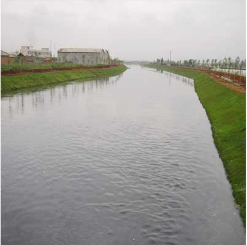
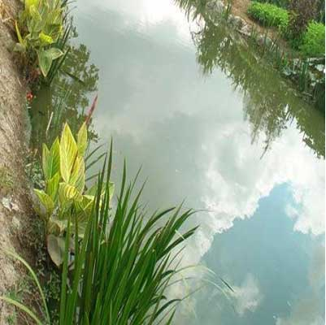
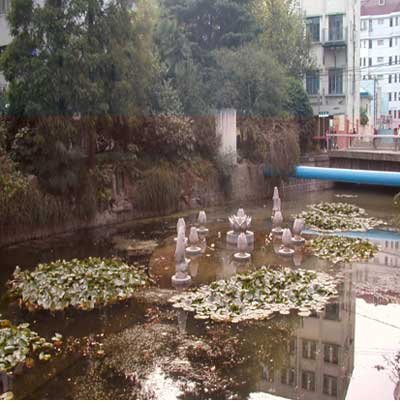

针对我国城市河流污染严重且污染类型复杂多样化势态，公司建有国内最完备的水处理技术数据库。由此，无论有机物污染、重金属污染、酸碱污染、病毒细菌污染，还是综合性污染，公司都将通过多种技术集成与整装，达到最佳的治理效果。公司在黑臭水体治理实践中，根据水体边界条件及污染源性质，因地制宜进行精准诊断。通过水文水质特征及水动力模型、治理目标与治理阶段的综合分析，在比选的基础上采用科学适当的集成技术进行“治本”方案，坚决摒弃单一的“治标”技术。
老段浦黑臭治理与生态修复工程

工程简介：老段浦位于宝山区庙泾野桥仓储区，全长270 m，宽约7m，深2m，是两端封闭的河道水体。
治理前水体污染严重，水质浑臭，可见油污和大量垃圾 ，藻类水华严重。
治理工程采用截污、曝气、造流、微生物、生态修复等技术分…
施北界黑臭治理与生态修复工程

河道原貌：黑臭
污染源：倒马桶、菜地垃圾、农药、化肥直接入河等
采用技术
1、截污 2、沟通水体
3、沟造自然湿地利用废弃池塘形成净化湿地 4、种植水生植物
曹杨环浜生态修复工程

河道概况：曹杨环浜是位于上海市普陀区曹杨新村的一条环形封闭水道，全长2208m，宽8～14m。
治理前河道状况：曹杨环浜位处上海市老城区腹地，过去由于大量城市污水和垃圾注入的污染影响，环浜水体发黑发臭严重，沿途环境污浊不堪，是上海市有名的城中心臭水沟，周围市民深受其苦